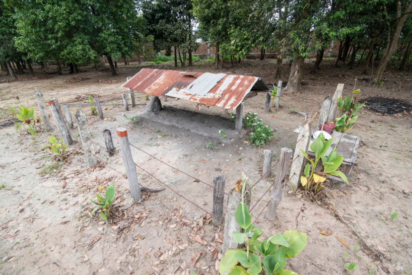

Oddar Meanchey, which lies in northwestern Cambodia, is the province where the former Khmer Rouge army maintained their last stronghold. The town of Anlong Veng, which housed the last home for Pol Pot--the notorious Khmer Rouge leader--has been earmarked by the Royal Cambodian Government as one of the country's historical sights. The provincial capital is Samraong.
Though remote, Oddar Meanchey has several historical sites worth visiting. In Anlong Veng district, along Road 68, about 100 kilometers east of Oddar Meanchey provincial town, is a house once owned by former Khmer Rouge Commander Ta Mok. From 1979 until late1997, this area was organized and controlled by the Khmer Rouge armies. Some remaining statues describe the way the rebels lived and how they arranged their troops during their bloody struggle against the government.
Additionally, there is a pile of tires in the forest that is thought to be the funeral pyre and burial site of Pol Pot, the leader of Khmer Rouge. Visitors who stop in Oddar Meanchey often make the visit to Anlong Veng to see and photograph the sites associated with the former regime.
The Cambodian-Thai border check point of Ou Smach is about 41km from the provincial town. At the border, there are restaurants, casinos and hotels.
